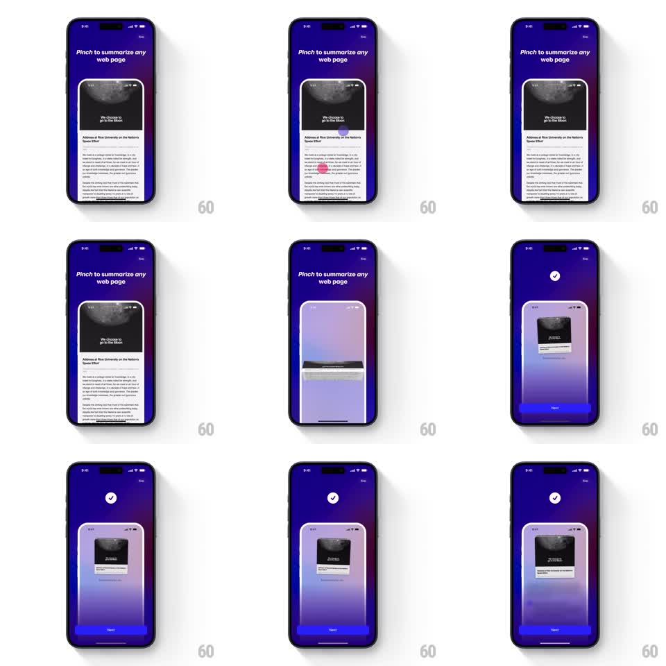

Media
Frame-by-frame

Rebuild this animation 1:1: Arc Search's pinch-to-summarize tip - two dots pinch a web page card, which crumples down and morphs into a compact AI summary card on a purple gradient field.

Rebuild this animation 1:1: Arc Search's pinch-to-summarize tip - two dots pinch a web page card, which crumples down and morphs into a compact AI summary card on a purple gradient field.
## Integration
Integration: stack-agnostic spec - springs given as stiffness/damping, timed motions as duration + curve; map every value to your framework and animation library of choice.
## Scene
An onboarding card on a purple gradient: "Pinch to summarize any web page" headline over a demo phone frame showing a long article ("We choose to go to the Moon"). Two touch dots pinch inward; the article card compresses, its content folding away, and resolves into a small summary card under a white checkmark badge, with a Next button below.
## Motion spec
Pattern: pinch morph to summary, ~2s.
- Two touch dots appear on the article's mid-edges and travel toward each other (600ms, ease-in-out), simulating the pinch.
- The article card compresses with them: its body content folds upward and clips away (matching the dots' travel), the frame shrinking vertically.
- A gradient shimmer washes over the compressing card (300ms) as it crosses into the summary state.
- The small summary card settles at center (spring stiffness 320 damping 18), the white checkmark badge popping above it (scale 0.5 to 1, stiffness 420 damping 15).
- The Next button fades in below (250ms).
## Calibration
- The compression is coupled to the dots - the card never moves faster than the fingers.
- The morph reads as folding, not scaling: content clips, the frame keeps its width until the end.
## Reduced motion
Article crossfades to the summary card.
## Don't miss
- The touch dots are visible and distinct (one dark, one pink) - they teach the gesture.
- The summary card keeps the article's hero image as a small thumbnail.